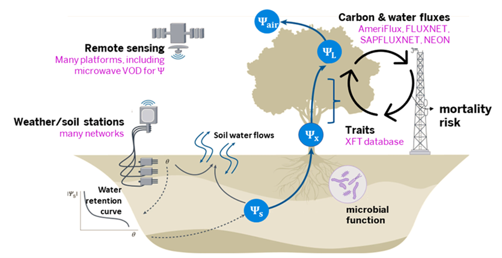
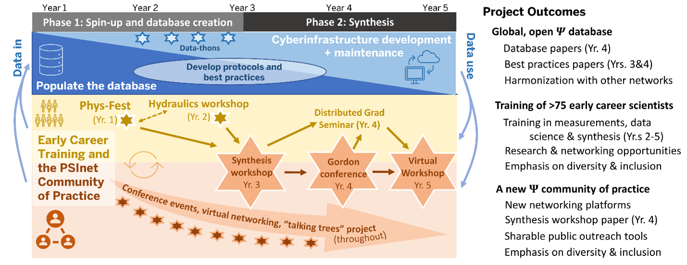

About
Anticipating and preparing for life on a warming planet requires a predictive understanding of how increasing drought and heat stress will affect terrestrial plants and the many services they provide. The water potential of soils and plants – which can be imagined as the blood pressure of the natural world – is a fundamental driver of ecosystem water flows, and directly controls many aspects of plant functioning during drought. However, observations of water potential (commonly abbreviated with the Greek letter ‘Psi’, \(\Psi\)) are relatively sparse, discontinuous, and unaggregated, and plagued by methodological challenges and disparities that constrain the synthetic research necessary to improve conceptual understanding and predictive models of plant drought responses.

Goals & Objectives
Our goal is to create a network – PSInet – that will confront the water potential information gap and enable the pursuit of previously intractable questions about plant responses to drought and heat stress. PSInet will be a network of data and a network of people, organized around coordinated research, training, and community-building activities designed to increase the availability, integrity, and accessibility of information to a diverse scientific community.
Specific objectives include:
Promote consistent collection and interpretation of data by a diverse global community of scientists through shared protocols, best practices, and early career training.
Create an open, global database for plant and soil time series that is harmonized with information available from other environmental observation networks.
Support synthetic end-use of the PSInet database to address pressing knowledge gaps.
Foster a diverse and inclusive network environment with multiple mechanisms to advance the careers of demographically, geographically, and intellectually diverse cohorts of early career scientists.
Broaden the impact of plant drought research through public outreach activities organized around a network of “Talking Trees” at public gardens and arboreta.

Origins
The PSInet idea represents a convergence of prior initiatives linked by their focus on network-enabled and/or global-scale understanding of ecosystem water status and flows. The first call from a water potential network may be traced to at 2012 American Geophysical Union presentation by PSInet Steering Committee member George Koch, which coincided with the publication of the first iteration of the Xylem Functional Traits (XFT) database. Since then, the SAPFLUXNET network was conceived and built, and flux tower networks have grown larger and become more open.
The last decade has seen an explosion of interest in using plant hydraulic concepts to address pressing eco-physiological research questions.However, a centralized repository for water potential time series, which are critical for connecting meteorological drivers to plant responses, does not yet exist. The need for such a database was again raised at the 2020 Ecological Society of America (ESA) meeting, where several team members (Guo, Novick, Kannenberg) convened the session “Plant Water Use Strategies in a Changing World.” The journal Functional Ecology invited the session organizers and speakers to prepare a review article on the topic which proposes that fully characterizing plant drought responses “require[s] water potential datasets of greater quantity and quality to pair with flux measurements, model output, and remote sensing approaches.”
At the same time, interest has been growing in the potential to use remotely-sensed vegetation optical depth data as a proxy for ecosystem water content and potential at continental and global scales. However, this research priority requires a centralized network of in-situ water potential observations for algorithm development and benchmarking. The emergence of psychrometers and other methodologies as tools for continuous monitoring of in-situ plant water potential has revealed a clear need for community-developed best practices and standards for deploying these instruments. Finally, there is a growing appreciation of the value of collecting, and aggregating, information on soil water potential (and its relationship with soil moisture content) in ecological field research settings, which is already being addressed to some extent by activities born out of the AmeriFlux “Year of Water” initiative (including the deployment of in-situ matric potential sensors at AmeriFlux sites, and a systematic effort to generate laboratory-derived water retention curves).
With support from this RCN, we can grow these individual efforts into a much larger global database that also includes continuous plant Ψ timeseries, and with links to data across multiple networks. This RCN will also provide diverse networking and training opportunities through collaborations with multiple established workshops and short-courses, including PhysFest, the Summer Workshop in Plant Hydraulic Techniques, and FluxCourse. Thus, our network design brings together many ongoing but thus-far disjunct and incomplete activities into a broader vision for a global plant water potential network and associated Community of Practice.
The Team
Leadership: Kim Novick (Indiana University), Jessica Guo (University of Arizona), Dan Johnson (University of Georgia), Kate McCulloh (University of Wisconsin), Jesse Nipper (Kansas State University), Steve Kannenberg (West Virginia University), Michael Benson (Indiana University).
Steering Committee: William Anderegg (U. of Utah), Brendan Choat (Western Sydney U.), Kevin Hultine (Desert Botanical Garden), George Koch (Northern Arizona U.), Alexandra Konings (Stanford U.), Lauren Lowman (Wake Forest U.), Jordi Martínez-Vilalta (Autonomous U. of Barcelona), Ashley Matheny (U. of Texas), Rafael Poyatos (CREAF, Barcelona), H. Jochen Schenk (California State U. – Fullerton), and Russell Scott (USDA-ARS).
Working groups:
Data WG: Guo and Poyatos, plus Francesco Giardina (ETH-Zurich) Sandra Bucchi (Institute of Biosciences of the Patagonia, Argentina), Celia Rodriguez- Dominguez (IRNAS-CSIC, Spain), Aurora Kagawa-Viviani (U. of Hawaii), Jess Gersony (Smith College.), Rafael Oliveira (University of Campinas, Brazil), Angela Rigden (UC Irvine), Jennifer Peters (Oak Ridge Natl. Lab), Tonantzin Tarin (U. Nacional Autónoma de México), Quan Zhang (Wuhan U., China), and new members to be added.
Cyberinfrastucture WG: Guo, Poyatos (SAPFLUXNET), plus William Hammond (U. of Florida, XFT), Housen Chu (LBNL, Ameriflux), and new members added after the project begins.
Continuous Data WG: Guo, Schenk, Koch, Choat, Matheny, and Novick, plus Steve Kannenberg (U. of Utah), Daniel Beverly (Indiana U.), and new members added after the project begins.
Synthesis WG: Novick, Scott, Martínez-Vilalta, Konings, Matheny, Lowman, Hultine, and Anderegg, and new members to be added.
Community WG: Johnson, McCulloh, Schenk, Hultine, and Novick, plus Juliana Medeiros (Holden Arboretum), Chis Oishi (Coweeta), Jesse Nippert (Kansas State U.), and new members to be added.